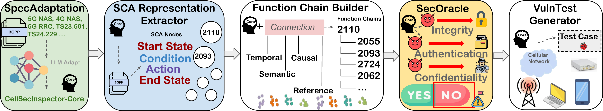

Overview
Automated Security Analysis of Cellular Specifications
CellSecInspector transforms complex 3GPP specifications into structured procedural representations, connects distributed behaviors into function chains, checks them against foundational security properties, and generates grounded test cases for expert validation.
Our Method
CellSecInspector Pipeline

→→→→
A Violation Example
Replay-Induced Service Integrity Violation
New Vulnerabilities